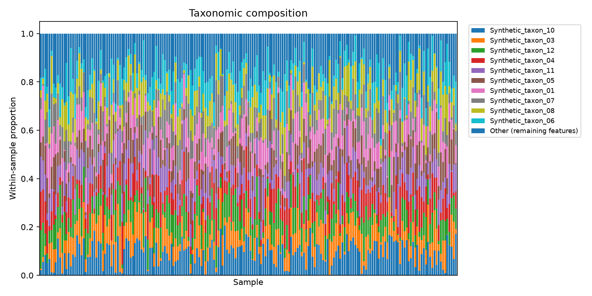
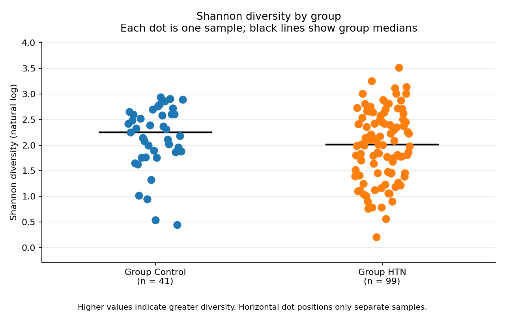
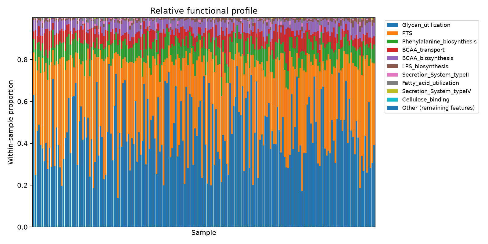

Verify and explain
A saved result is more useful when you can trace it back to the input. Verify one sample, check a functional proportion and use numerical summaries to support what you see.
Taxonomic composition and calculated Shannon values use synthetic placeholder taxa and do not describe the hypertension study. Functional interpretations remain provisional until source, definitions and units are confirmed.
1. Verify a named sample
Use ERR1398068. For the current placeholder table, expect:
| Quantity | Expected value |
|---|---|
| Total taxonomic abundance | 4,761 |
| Detected taxa | 12 |
| Shannon diversity, natural logarithm | 2.202635 |
Run the supplied verification script from the main project folder:
python scripts/python/verify_sample.py \
data/hypertension results/hypertension ERR1398068Compare its reported values with the table above and with results/hypertension/tables/alpha-diversity.tsv.
Recalculate independently
This block makes each calculation visible and compares it with the saved row. Copy the complete block into the terminal:
python - <<'PY'
import math
import pandas as pd
sample = "ERR1398068"
taxa = pd.read_csv("data/hypertension/taxon-abundance.tsv", sep="\t", index_col=0)
saved = pd.read_csv("results/hypertension/tables/alpha-diversity.tsv", sep="\t", index_col=0)
# Calculate this sample's total and number of positive taxon values.
x = taxa[sample].astype(float)
total = float(x.sum())
detected = int((x > 0).sum())
# Only positive values contribute to natural-log Shannon diversity.
p = x[x > 0] / total
shannon = -sum(float(value) * math.log(float(value)) for value in p)
for name, manual in [("total_abundance", total),
("detected_taxa", detected),
("shannon", shannon)]:
recorded = float(saved.loc[sample, name])
agrees = math.isclose(manual, recorded, rel_tol=1e-9, abs_tol=1e-9)
print(f"{name}: manual={manual:.6f}; saved={recorded:.6f}; agrees={agrees}")
PYAll three comparisons should print agrees=True. A tiny difference in the last decimal places can be rounding. A larger difference calls for checking the input version, selected sample, normalization and logarithm base. Do not change a saved result merely to make it agree.
source_shannon_index is a separate supplied metadata field. It is not the reference value for this calculation from placeholder taxa.
2. Check a functional proportion
For ERR1398068, the supplied functional values sum to 45,300 and LPS_biosynthesis is 436. The saved proportion should therefore be approximately \(436/45300 = 0.009625\), or 0.9625% of the supplied functional total.
python - <<'PY'
import math
import pandas as pd
sample = "ERR1398068"
feature = "LPS_biosynthesis"
raw = pd.read_csv("data/hypertension/functional-features.tsv", sep="\t", index_col=0)
saved = pd.read_csv("results/hypertension/tables/functional-relative-abundance.tsv", sep="\t", index_col=0)
manual = raw.loc[feature, sample] / raw[sample].sum()
recorded = saved.loc[feature, sample]
print(f"Calculated proportion: {manual:.6f} ({100 * manual:.4f}%)")
print(f"Saved proportion: {recorded:.6f}")
print("Agrees:", math.isclose(manual, recorded, rel_tol=1e-9, abs_tol=1e-9))
PYThis checks arithmetic. It does not establish what the original feature values measure or whether their sum is a biologically appropriate denominator.
3. Explain taxonomic composition

Choose one sample with an uneven profile. Use taxon-relative-abundance.tsv to identify its largest taxon proportion, then write a sentence containing the sample ID, taxon ID and value. Other combines taxa rather than naming an organism.
Sentence starter: “In sample …, placeholder taxon … accounts for …% of the supplied taxonomic abundance.” This describes the exercise without implying a hypertension association.
4. Explain Shannon diversity

Inspect sample counts, spread and overlap before comparing medians. Generate a numerical summary:
python - <<'PY'
import pandas as pd
alpha = pd.read_csv("results/hypertension/tables/alpha-diversity.tsv", sep="\t")
summary = alpha.groupby("group", sort=False).agg(
samples=("shannon", "size"),
median_shannon=("shannon", "median"),
minimum_shannon=("shannon", "min"),
maximum_shannon=("shannon", "max"),
minimum_detected_taxa=("detected_taxa", "min"),
maximum_detected_taxa=("detected_taxa", "max"),
)
print(summary.round(6).to_string())
PYIn the current placeholder table, samples have 11 or 12 detected taxa. Do not assume richness is identical throughout. For two samples with the same detected-taxon count, a Shannon difference reflects evenness; across samples with different counts, both richness and evenness may contribute.
Your task: identify the group with the highest calculated median, quote the value and describe overlap with the other groups. Add: “These values were calculated from synthetic placeholder taxa and do not establish a study finding or statistical significance.”
5. Explain the functional profile

Choose a visible feature and confirm one sample’s proportion in the saved table. Use “larger proportion of the supplied functional total” rather than “more active pathway.” Features may be selected, overlapping or differently normalized; resolve those details before biological interpretation.
Your evidence check
Write three short observations, one per figure. For each, include a numerical value, its source table, a limitation and a useful next check. A useful next check might be replacing placeholder taxa, confirming functional units or checking sample independence.
Ready to report: you can reproduce the named sample’s values and distinguish a correct calculation from an interpretable biological conclusion.